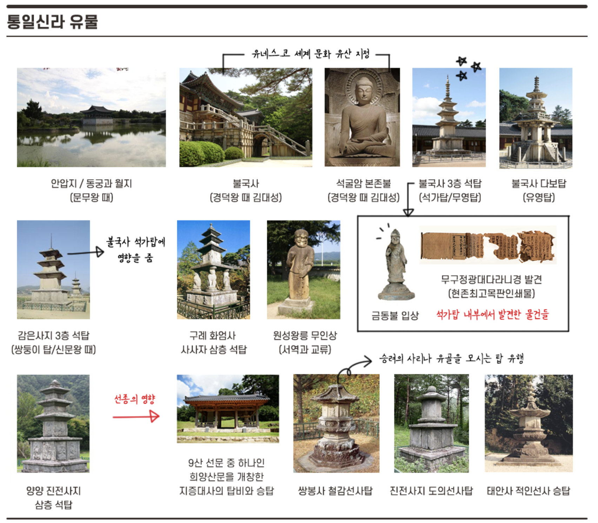

통일 신라
676년 ~ 935년
통치체제 : 화백 회의(만장일치), 상대등(시중), 17관등, 14부 9주 5소경(신문왕 때)
관련인물 : 김유신, 이사부, 이차돈, 원광, 자장, 혜초, 비담, 원효, 의상, 김춘추, 김흠돌, 김대성, 김헌창, 장보고, 최치원
유물유적 : 호우명그릇, 단양적성비, 북한산순수비, 마운령비, 함초령비, 황룡사, 첨성대, 분황사, 황룡사 9층 목탑, 수중릉, 월지와 안압지, 포석정, 천마총, 천마도, 불국사, 석굴암, 석가탑(무주정광대다라니경, 금동불 입상), 다보탑, 만파식적, 감은사지 3층 석탑(통일신라 석탑의 원형 마련), 진전사지 3층석탑(기단과 1층 몸돌에 불상이 있음), 쌍봉사 철감선사탑
통일신라 역대 왕조 더보기 >
[31] 신문왕 : 왕권강화, 김흠돌의 난(왕의 장인, 귀족 세력 숙청), 지방 행정 : 9주 5소경, 군사 : 9서당 10정, 관료전 지급, 녹읍 폐지, 식읍 제한(상대등 약화, 집사부 시중 강화), 국학 설치(유학 경전, 6두품 등용, 박사와 조교, 관등, 대사, 나마), 만파식적(피리) 제작, 설총 《화왕계》, 감은사지 3층 석탑 건립(쌍둥이 탑, 훗날 석가탑에 영향을 줌)
[33] 성덕왕 : 백성에게 정전 지급 ▶ 신라 최대 태평성대기
[35] 경덕왕 : 불국사와 석굴암 건립(김대성), 관료전 폐지, 녹읍 부활(757), 국학 → 태학감으로 개칭, 9주의 명칭을 중국식으로 변경, 성덕 대왕 신종 제작 시작
[36] 혜공왕(피살) : 96각간의 난(이벌찬), 성덕 대왕 신종 완성
[내물왕방계]
[37] 선덕왕 : 혜공왕 피살 후 상대등이 왕이됨, 이후 120년간 20명의 왕 등장(상대등 세력 강화, 치열한 왕위 다툼)
[38] 원성왕 : 독서삼품과 시행(실패)
[41] 헌덕왕 : 김헌창의 난(822, 진골 귀족간의 왕위 다툼)
[42] 흥덕왕 : 장보고가 완도에 청해진 설치(828)
[51] 진성여왕 : 마지막 여왕, 삼대목 편찬, 원종과 애노의 난(889), 적고적의 난(896), 최치원 시무10조(정책서) 실패
[53] 신덕왕 : 견훤의 대야성 공격
[55] 경애왕 : 견훤의 습격으로 포석정에서 자결
[56] 경순왕 : 고려에 항복, 왕건에게 나라를 바치고 고려 경주 지역의 사심관이 됨
* 신라 하대에는 '풍수지리'와 '선종'이 유행
* 신라 하대에는 골품제를 비판하며 새로운 정치 이념을 제시하는 6두품과 지방 호족 세력이 강화
ㆍ두품 : 최치원(당나라에 유학하여 빈공과에 장원 급제), 설총(화왕계, 이두를 체계적으로 정리)
ㆍ지방 호족 세력 : 사벌성 성주 아자개의 아들 "견훤"과 원주 호족 양길의 부하 "궁예"가 후삼국을 세움
※ 민정문서 : 일본 도다이사 쇼소인에서 발견됨. 통일 신라말 서원경(청주) 부근 촌락의 경제 상황과 조세 제도를 잘 보여주는 자료이다. 서원경에서는 세금 확보를 위해 촌주에게 촌락마다 그 지역의 토지 크기, 인구 수, 말의 수, 특산물 수 등을 파악하게하는 민정문서를 3년마다 만들었다. (참고로 인구를 남녀별, 연령 별로 파악)